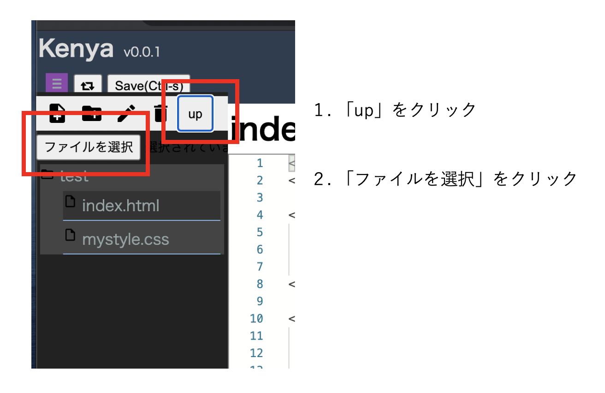

HTMLの基本
本章では，HTMLファイル作成の基本について学びます．
初学者用Webページ開発環境（pikeplace - kenya）を使って学習を進めます．
基本的な使い方はsumatraに準じています．
最初のページ（最小限の構成）
まずはkenyaにログインし，新しいフォルダを「Sample01」という名称で作成してください．
その後，新しいファイルを「index.html」という名称で作成してください．
HTMLファイルは「.html」という拡張子を使用します。
index.htmlを作成したら，次の「source」のように編集してください．
<html>
<head>
<title>HTMLの練習</title>
</head>
<body>
<p>最小限の構成を作ってみます</p>
</body>
</html>
タグ
head部でよく使うタグ
<meta charset="UTF-8">
<meta name="description" content="HTML練習">
<title>HTMLの練習</title>
<link rel="shortcut icon" href="myfavicon.ico">
<link rel="stylesheet" href="mystyle.css">
<script src="myscript.js"></script>
コメント
<!-- これはコメントです -->
- <!– と –>で囲まれた部分はコメント，解釈・表示されない
実体参照
|
文字
|
実体参照
|
説明
|
|
<
|
<
|
小なり記号
|
|
>
|
>
|
大なり記号
|
|
&
|
&
|
アンド記号
|
|
"
|
"
|
ダブルクォーテーション
|
body部で利用するタグ
<h1>ようこそ</h1>
<p>この部分に文章を書いていきます．</p>
<h2>改行の方法</h2>
<p>この文の直後で改行する．<br>改行しました．</p>
- 見出しは h1（大見出し） から h6（小見出し） まで．
- パラグラフは<p> </p>でくくる．
- 希望位置で改行したい場合には<br>を利用（閉じタグ無し）．
画像を貼る
画像を利用する場合には事前にWebサーバにアップロードしておく必要があります．
本演習では，以下の手順でkenyaサーバに画像をアップロードしておきます．
- 「up」をクリックする
- 「ファイルを選択」をクリックし，画像をアップロードする
- アップロードされたことを確認する

その後，以下のように<img>タグを用いて画像を貼ります．
<img src="test.jpg" width="180" height="240" alt="サンプル画像">
- srcにファイル名を，altには画像の説明を付ける
- 画像ファイルは，GIF, JPEG, PNGの形式
リンクする
<p>Googleは<a href="http://google.com">こちら</a>から</p>
<p>別に作ったページは<a href="next.html">ここ</a>から</p>
- オプション target="_blank" を付けると別ウィンドウ（タブ）で開く
箇条書き
<p>クラウドといえば</p>
<ul>
<li>IaaS</li>
<li>PaaS</li>
<li>SaaS</li>
</ul>
段落番号
<p>信号の色の順</p>
<ol>
<li>青</li>
<li>黄</li>
<li>赤</li>
</ol>
- ul : Unordered List (順序のないリスト) → 箇条書きリスト
- ol : Ordered List (順序のあるリスト) → 番号付きリスト
- li : List Item (リストの項目)
表
<p>売り上げ</p>
<table>
<tr><th>支店名</th><th>2009年</th><th>2010年</th><th>2011年</th></tr>
<tr><th>新宿支店</th><td>1000</td><td>1200</td><td>1500</td></tr>
<tr><th>渋谷支店</th><td>800</td><td>950</td><td>1300</td></tr>
<tr><th>横浜支店</th><td>900</td><td>1100</td><td>1200</td></tr>
</table>
- tr : 行の指定
- th : 見出しの指定
- td : 列（データ）の指定
その他：学習に関して
- 日常的に作業しない場合，全てのタグやオプションを覚えることは困難
- 例題の多い辞書的なサイトが参考に
- お手本となるサイトのソースを覗く
練習問題
練習問題8-1
配布ファイルssi.txtの内容を使い，以下の表示例と同様の出力が可能なssi.htmlを作成せよ
- 表示例（1）
- 表示例（2）
- 表示例（3）
- 表示例（4）
- 表示例（5）
- ただし，見出しの設定と表の構成は次に従うこと
- 見出しの設定
- h1 :「社会情報学部の教育」
- h2 :「学際的融合領域を学ぶ」「カリキュラムでの科目」
- h3 : それ以外の見出し部分
- 表示例（4）の表の構成
- 表の周りの線や色が無いためわかりづらいので，わかりやすくするために色づけした表を以下に示す
- このように3行2列の表を作成する（実際には色付けは不要である）
- 表示例（5）の表も同様に2行3列である
- どの行にどの科目が入るのかは，ssi.txtファイルを参照すること
練習問題8-2
3つのHTMLファイルからなる青山学院大学を説明するWebページを作成せよ
- ただし、文章はagu.txtを利用すること
- ページの構成は以下のようにすること
- index.html : トップページ
- dept.html : 学部について書かれたページ
- history.html : 沿革について書かれたページ
- 画像：test.jpgを利用する
- index.htmlの表示例
- history.htmlの表示例
- dept.htmlの表示例
CSSの基本
本章では，CSSファイル作成の基本について学びます．
初学者用Webページ開発環境（pikeplace - kenya）を使って学習を進めます．
基本的な使い方はsumatraに準じています．
CSS
CSS（Cascading Style Sheet）はHTMLとの組み合わせでWebページを実現する仕組みです．
主にWebページの「見た目（スタイル）」を規定します。
CSSを作成する場所
CSSを作成する（記述する）場所には以下の３種類があります。
- HTML文書中にstyleタグを使って記述
- HTMLの要素にstyle属性を使って記述
- 外部ファイル（htmlとは別のファイル）として作成し，HTML文書から読み込む
CSS作成時の注意
CSSファイル作成時には以下に注意してください．
- ファイルの拡張子を「.css」にする
- ファイルの文字コード（エンコーディング）を「UTF-8」にする
- kenyaで作成する場合は自動的にUTF-8になります．
最初のページ（最小限の構成）
まずはkenyaにログインし，新しいフォルダを「Sample02」という名称で作成してください．
その後，新しいファイルを「index.html」という名称で作成してください．
index.htmlを作成したら，次の「source」のように編集してください．
<!DOCTYPE html>
<html lang="ja">
<head>
<meta charset="UTF-8">
<title>CSSの練習</title>
</head>
<body>
<h1>練習1</h1>
<p>こんにちは</p>
</body>
</html>
さらに、「fitst.css」という名称で新規にファイルを作成してください。 first.cssは次の「source」のように編集してください．
h1{
color: blue;
}
さらに、index.htmlの7行目（ <title>CSSの練習</title>の下）に以下を追加してください．
<link rel="stylesheet" href="first.css">
最終的には以下のようなコードになります． 「練習1」の色が変化したことを確認してください。
<!DOCTYPE html>
<html lang="ja">
<head>
<meta charset="UTF-8">
<title>CSSの練習</title>
<link rel="stylesheet" href="first.css">
</head>
<body>
<h1>練習1</h1>
<p>こんにちは</p>
</body>
</html>
CSSの構造
CSSの基本的な構造は以下のようになっています．
h1{
color: blue;
}
|
セレクタ{
プロパティ: 値;
}
|
セレクタ（見た目を変えたい場所：HTMLタグなどで指定）に対して，プロパティと値のセットを指定します．
今回の場合は，color（プロパティ）とblue（値）の組み合わせになっています．
つまり、上記のCSSは「h1タグ<h1>の文字色を青色に設定する」という意味になります．
プロパティの後はコロン（:），行の最後はセミコロン（;）です．
プロパティに対して値が複数ある場合には，値の間をスペースで区切ります． 複数のプロパティに設定する場合は行を変えます．
セレクタとして指定できる要素は以下です．
- タグ
- body, p, table, th, ul, などなど
- ID
- クラス
- セレクタ指定時にはclass名の前に「.」 をつける
/* と */で囲まれた部分はHTMLと同様にコメントになり，解釈・表示されません．
範囲指定（汎用要素）
汎用要素とは，HTML文書のなかの「ある特定の範囲」を指定するための要素です．
- div : 汎用ブロック要素
- span : 汎用インライン要素
汎用要素には，区別するための識別子をつけます．
識別子を利用して，「どの」要素にスタイルを適用するかを特定します．
- id : 文書中の特定の1箇所を指定する
- class : 文書中の複数の箇所をまとめて指定する
なお、idやclassは通常のタグにもつけられます． 使用例を以下に示します．
<!DOCTYPE html>
<html lang="ja">
<head>
<meta charset="UTF-8">
<title>CSSの練習</title>
<link rel="stylesheet" href="divspan.css">
</head>
<body>
<p>汎用要素の指定例</p>
<p>文章中の<span class="foo">この場所</span>は別のスタイル</p>
<p>文章中の<span id="bar">この場所</span>は上とは別のスタイル</p>
<p>次はdivの例です．<div id="baz">divはまとまりとしてスタイルを指定する時に使います．ただし<span class="foo">ここ</span>だけ一番上と同じスタイルとなります．divの前後は改行されます．</div>ここからdivの範囲外になります．</p>
</body>
</html>
id（bar, baz）でしている場所はそれぞれ１カ所ずつあります．
これらはそれぞれ別のスタイルが適用されます．
またclass（foo）で指定している場所は２カ所あります．
これらは同じスタイルが適用されます．
cssファイル内でのID、クラスの指定は以下のように行います．
- ID
- 識別子idで指定した名前の先頭に「#」をつける
- 例：#bar, #baz
- クラス
- 識別子classで指定した名前の先頭に「.」をつける
- 例：.foo
- divspan.css
#bar{
color: blue;
}
#baz{
color: red;
}
.foo{
color: green;
}
実際の見た目は以下のようになります．
<!DOCTYPE html>
<html lang="ja">
<head>
<meta charset="UTF-8">
<title>CSSの練習</title>
<link rel="stylesheet" href="divspan.css">
</head>
<body>
<p>汎用要素の指定例</p>
<p>文章中の<span class="foo">この場所</span>は別のスタイル</p>
<p>文章中の<span id="bar">この場所</span>は上とは別のスタイル</p>
<p>次はdivの例です．<div id="baz">divはまとまりとしてスタイルを指定する時に使います．ただし<span class="foo">ここ</span>だけ一番上と同じスタイルとなります．divの前後は改行されます．</div>ここからdivの範囲外になります．</p>
</body>
</html>
例題1 CSSを適用する
kenyaにログインし、Sample02フォルダを作成してください．
classroomからtest.jpgをダウンロードし、Sample02フォルダにアップロードしてください．
また，以下のようにtest01.htmlファイルを作成してください．
<html>
<head>
<meta charset="UTF-8">
<title>HTMLとCSSの練習</title>
<link rel="stylesheet" href="mystyle.css">
</head>
<body>
<p>最小限の構成</p>
<h1>ようこそ</h1>
<p>この部分に文章を書いていきます。</p>
<h2>改行の方法</h2>
<p>この文の直後で改行する。<br>改行しました。</p>
<h2>画像を貼る</h2>
<img src="test.jpg" width="100" alt="サンプル画像">
</body>
</html>
6行目で外部CSSファイルとして，「mystyle.css」を指定していることに注意してください．
これを元にスタイルを適用していきます．
mystyle.cssファイルの作成
mystyle.cssファイルを作成し，以下の内容（左側）を作成してください．
/* mystyle.css */
h1{
color: blue;
font-size: 40px;
}
|
mystyle.cssの説明
h1タグに対して{
色を青色に
フォントサイズを40pxに
}
|
例題2 様々なスタイルを適用する
以下では様々なスタイルについて説明しますが、全を解説するわけではありません．
詳細を知りたい人は，先週紹介したHTMLクイックリファレンス（http://www.htmq.com/ ）などを参照のこと．
テキストのスタイル：タグへの適用
まず最初にh2タグにスタイルを適用します（見た目を変更します）．
mystyle.cssに以下を追記してください．
/* mystyle.cssに追記 */
h2{
color: green;
font-size: 25px;
font-weight: bold;
font-style: italic;
text-align: center;
text-decoration: underline;
}
|
mystyle.cssの説明
h2タグに関して{
色を緑に
フォントサイズを25pxに
フォントを太字に
フォントをイタリックに
テキストの場所をセンタリング
テキストはアンダーラインで装飾
}
|
テキストのスタイル：ID，クラスへの適用
最初にtest01.htmlファイルにIDとクラスを設定します．
<body>
<p class="attention">最小限の構成</p>
<h1>ようこそ</h1>
<p id="underline20">この部分に文章を書いていきます。</p>
<h2>改行の方法</h2>
<p>この文の直後で改行する。<br><span class="attention">改行</span>しました。</p>
<h2>画像を貼る</h2>
|
このpタグ要素に「attention」クラスを設定
このpタグ要素に「underline20」IDを設定
このspanで囲まれた部分に対して「attention」クラスを設定
文章の一部のみを指定したいためspanを利用している
|
次に，mystyle.cssファイルに追記します．
#underline20{
font-size: 20px;
text-decoration: underline;
}
.attention{
color: red;
font-size: 24px;
}
|
underline20というIDに対して
フォントサイズを20px
テキストにアンダーライン
attentionというクラスに対して
文字色を赤
フォントサイズを24px
|
ブロック要素のスタイル
段落など文章のまとまりを指定したい場合にはdivタグを用いて指定します．
test01.htmlに以下のように追記してください．
<body>
<p class="attention">最小限の構成</p>
<h1>ようこそ</h1>
<p id="underline20">この部分に文章を書いていきます。</p>
<div id="block">
この部分はblockというIDが付けられている。
</div>
|
文章を追記し，その文章の範囲に「block」IDを設定
|
さらにmystyle.cssに以下を追記します．
#block{
background-color: aqua;
width: 30%;
height: 50px;
border-color: grey;
border-width: 5px;
border-style: solid;
/* solid の他に double; dotted;
dashed; inset; outset; が指定できる*/
}
|
block01というIDに対して
背景色を水色に
横幅は，表示領域の30％
高さは，50px
範囲の枠の色を灰色に
枠の幅は5px
枠線は通常の線
|
余白：マージンとパディング

要素ごとに余白（マージン、パディング）を設定できます．
test01.htmlに以下のように追記してください．
<div id="block">
この部分はblockというIDが付けられている。
</div>
<div id="b01">
この部分はb01
</div>
<div id="b02">
この部分はb02
</div>
|
文章を追記し，その文章の範囲に「b01」IDを設定
文章を追記し，その文章の範囲に「b02」IDを設定
|
さらにmystyle.cssに以下を追記します．
#b01{
background-color: #b0b9a9;
margin: 50px;
padding: 5px 0px 25px 20px;
}
#b02{
background-color: #89709f;
margin: 0px;
padding: 0px;
}
|
b01というIDに対して
背景色を16進数で指定
marginは上下左右50px
paddingは，上5px, 右0px,
下25px, 左20px
b02というIDに対して
背景色を16進数で指定
marginは上下左右0px
paddingは上下左右0px
注： 文字周り横の余白ではない
注： 一個値を設定：上下左右が均等
注： 二個値を設定：上下，左右 の設定
注： 四個値を設定：上,右,下,左の順の指定
|
リストのスタイル
リストに特有のスタイルには以下があります．
- ul
- { list-style-type: square; } ← 四角に
- ol
- { list-style-type: hiragana; } ← ひらがな
- lower-alpha 小文字アルファベット
- lower-roman 小文字のローマ数字
などです（調べてみましょう）．
各自、どのような見た目になるかを確かめてみてください．
擬似クラス
指定の要素が特定の状態である場合にスタイルを適用させるセレクタを擬似クラスと呼びます．
もう少しわかりやすくいうと、ユーザの何かの動作をきっかけにクラスが割り当てられる仕組みといえます．
要素の後ろに「:」をつけ，状態を記述します．
例えば以下のような使い方をします．
/* HTMLファイルの例 */
<body>
<h1>あいさつ</h1>
<ul id="greet">
<li>おはよう！</li>
<li>こんにちは！/li>
<li>こんばんは！</li>
</ul>
<span class="person">青山さん！</span>
</body>
|
/* cssファイルの例 */
li:last-child {
color: green;
}
/*
リストの最後の要素に色をつける
*/
.person:hover {
color: red;
}
/*
personクラスにマウスオーバーしたら色を赤に
*/
|
セレクタの高度な指定方法
複数のセレクタの指定の仕方にはいくつかの方法が存在します． 例を載せておくので，一度試してみてください．
- カンマで区切る #id, .class
- スペースで区切る #id .class
- 後のセレクタが前のセレクタの下位の要素である場合にはスタイルを適用（子要素，孫要素）
- 大なりで区切る #id>.class
- 後のセレクタが前のセレクタの子要素である場合には，スタイルを適用（孫要素の場合には適用されない）
- 区切らず，つなげた場合 span.foo
- span要素のうち，classがfooのモノのみ適用